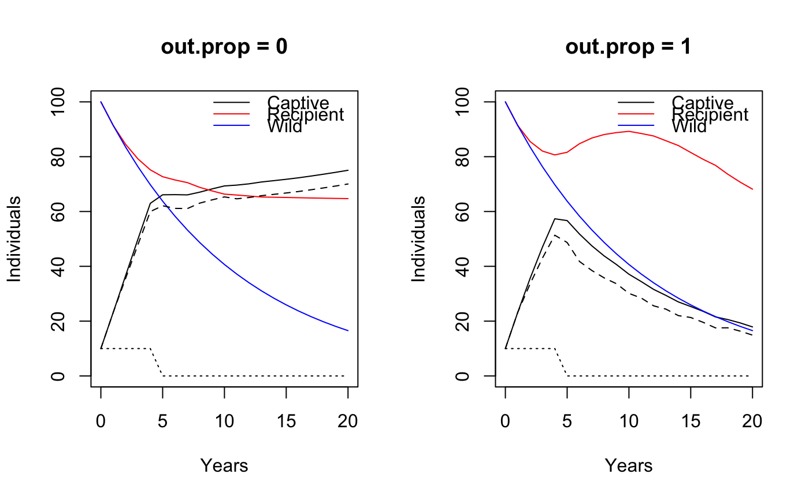

breeding.RdFunctions evaluate different options for conservation breeding.
wildlift_matrix(settings, wild=TRUE, age.cens=3, age.1st.litter=3, age.calf.max=1) wildlift_breeding(settings, in.inds=10, out.prop=1, f.surv.trans=1, j.surv.trans=1, j.surv.red=1, tmax=20, pop.start=100, breed.early=FALSE, f.preg.capt.2=0.57) # S3 method for wildlift_breeding print(x, ...) # S3 method for wildlift_breeding summary(object, ...) # S3 method for wildlift_breeding plot(x, plot = TRUE, ...)
| settings | a settings object returned by |
|---|---|
| wild | logical, whether to use the penned or wild vital |
| age.cens | censoring age. The projection matrix will contain one-year
age classes up to |
| age.1st.litter | integer, female age at 1st litter; lower limit of the age class, default is 3 years, i.e. the [3, Inf] interval. |
| age.calf.max | integer, maximum age to be considered as calf; upper limit of the age class, default is 1 year, i.e. the [0, 1) interval. |
| in.inds | integer vector, number of adult females put into pen each year.
0s are appended to the value meaning that no females
are added after the last value (up until year |
| out.prop | numeric vector between 0 and 1, the proportion of juvenile females
transferred from the penned to the recipient herd.
The last value is repeated when length is less than |
| f.surv.trans | numeric between 0 and 1, adult female survival during capture and transportation into the penned population. |
| j.surv.trans | numeric between 0 and 1, juvenile female survival during capture and transportation from penned to recipient herd. |
| j.surv.red | numeric between 0 and 1, transported juvenile female survival reduction factor for 1 year following capture and traportation. |
| tmax | positive integer, number of years to forecast after initial year 0. |
| pop.start | positive integer, initial population size in year 0 for the recipient and status quo populations (wild not receiving females). |
| breed.early | logical, allow females in the facility (not in the wild)
to reproduce at a younger age (2) if they are well fed.
Defaults to |
| f.preg.capt.2 | numeric, fecundity rate for the 2 yrs old (default is 0.57
based on Adam et al. 2019). Only applies when |
| x, object | an object to print, summarize, plot, etc. |
| plot | logical, whether a plot is to be produced. |
| ... | additional arguments to functions. |
The conservation breeding functionality is based on vital rates
provided via the settings argument.
These rates are turned into a projection matrix
using wildlift_matrix. This projection matrix
reflects survival and reproduction rates based on
the settings, tracking females only based on a sex ratio of 0.5.
The wildlift_breeding function tracks changes
in the conservation population starting with adding
females to produce offspring.
Juvenile females are captured and transferred to the recipient herd.
The proportion of juvenile females transferred can be changed through
out.prop (0: none, 1: all).
The output object tracks the number of adult females added to the penned population, and the number of juvenile females transferred from the penned to the recipient herd.
Besides these, a status quo (wild without receiving juveniles) population trajectory is used as a reference. This status quo population uses the same vital rates as the recipient herd, but does not get the extra juvenile females from the penned population.
wildlift_matrix returns a projection matrix.
wildlift_breeding returns a conservation breeding object.
It contains age specific population sizes for the
penned, recipient, and status quo populations (females only).
The print method returns the input object x invisibly.
The summary method returns population summaries
for the conservation breeding object.
The plot method return the plotted data invisibly
and produces a plot as a side effect.
#> [0,1) [1,2) [2,3) [3,Inf] #> [0,1) 0.000 0.000 0.000 0.39238 #> [1,2) 0.163 0.000 0.000 0.00000 #> [2,3) 0.000 0.853 0.000 0.00000 #> [3,Inf] 0.000 0.000 0.853 0.85300wildlift_matrix(s, wild=FALSE) # captive#> [0,1) [1,2) [2,3) [3,Inf] #> [0,1) 0.000 0.000 0.000 0.41538 #> [1,2) 0.598 0.000 0.000 0.00000 #> [2,3) 0.000 0.903 0.000 0.00000 #> [3,Inf] 0.000 0.000 0.903 0.90300## out.prop = 0.5: move half of the juveniles x0 <- wildlift_breeding(s, tmax = 20, # projection horizon in.inds = rep(10, 5), out.prop = 0.5) x0#> Caribou captive breeding: #> #> - tmax :20 #> - pop.start :100 #> - f.surv.trans:1 #> - j.surv.trans:1 #> - j.surv.red :1 #> #> capt recip wild #> N 75.04 64.7075 16.539 #> lambda 1.01 0.9989 0.914summary(x0)#> Years Nin Nout Ncapt Nrecip Nwild #> 0 0 10 0 10.00000 100.00000 100.00000 #> 1 1 10 0 23.18380 91.39560 91.39560 #> 2 2 10 1 36.57274 84.53156 83.53156 #> 3 3 10 2 49.90599 79.19717 76.34417 #> 4 4 10 3 62.97136 75.20883 69.77522 #> 5 5 0 4 66.10100 72.69185 63.77148 #> 6 6 0 5 66.14644 71.51094 58.28433 #> 7 7 0 5 66.06537 70.54088 53.26931 #> 8 8 0 4 67.05677 68.81331 48.68581 #> 9 9 0 4 68.24719 67.50806 44.49669 #> 10 10 0 4 69.33134 66.33973 40.66802 #> 11 11 0 5 69.63261 66.01251 37.16878 #> 12 12 0 5 70.10547 65.65299 33.97063 #> 13 13 0 5 70.77357 65.28558 31.04766 #> 14 14 0 5 71.25775 65.20330 28.37620 #> 15 15 0 5 71.75599 65.11790 25.93460 #> 16 16 0 5 72.30167 65.02831 23.70308 #> 17 17 0 5 72.92974 64.93480 21.66357 #> 18 18 0 5 73.59496 64.85121 19.79955 #> 19 19 0 5 74.29657 64.77593 18.09592 #> 20 20 0 5 75.04064 64.70754 16.53888#> Caribou captive breeding: #> #> - tmax :20 #> - pop.start :100 #> - f.surv.trans:1 #> - j.surv.trans:1 #> - j.surv.red :1 #> #> capt recip wild #> N 17.8985 68.1489 16.539 #> lambda 0.9248 0.9636 0.914par(op)